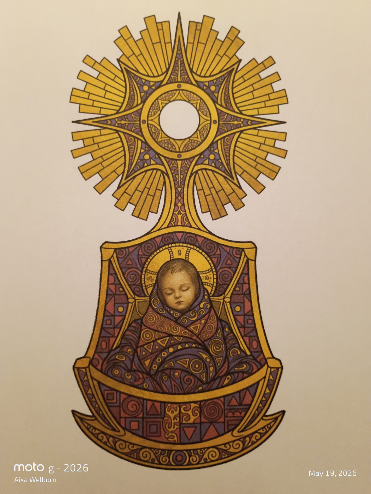

A one-day Catholic retreat
New Bethlehem
If you are carrying grief or regret after an abortion, New Bethlehem offers you a day for prayer and reflection.

If you are carrying grief or regret after an abortion, New Bethlehem offers you a day for prayer and reflection.
